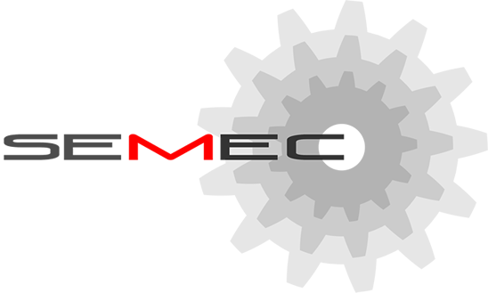
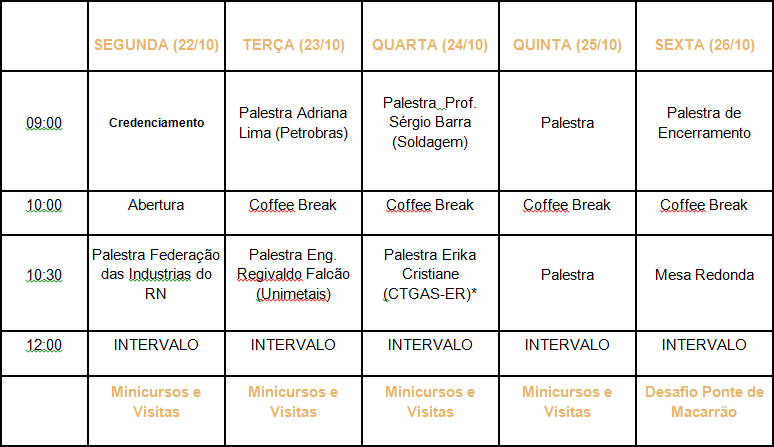

Inicial

Com a responsabilidade de representar os alunos do curso, o centro acadêmico de engenharia mecânica realiza a semana da engenharia mecânica com o intuito de aproximar os discentes do mercado de trabalho e/ou meio acadêmico. Contando na edição anterior com palestrantess renomados na engenharia mecânica brasileira como o Eng. Antonio Traverso, gerente da BR distribuidora, bem como o Dr. Eng. Aldelci Oliveira, ex-pesquisador do cenpes,fundador da empresa SG Green, Eng. Daniel Faro, responsável pelo laboratório de mapas e dados de recursos energéticos do CTGAS-ER, um consórcio entre a Petrobrás e o SENAI. O Centro Acadêmico de Engenharia Mecânica da UFRN ( CAEM ) promove a SEMANA DA ENGENHARIA MECÂNICA 2012 ( SEMEC 2012 )
objetivos
Como objetivos desse valioso evento, podemos destacar:
-
a. Integração Aluno – Empresa
Sabendo da necessidade crescente de engenheiros no mercado, essa integração visa permitir o direto contato do aluno com as empresas da sua região, interesse e área, facilitando a possível inserção do discente no mercado de trabalho -
b. Auxiliar na avaliação das áreas da engenharia
O curso de engenharia mecânica possui diversas áreas de atuação: desde a área de projetos quanto à de gestão. Nesse contexto, palestras e minicursos visam mostrar aos alunos os possíveis campos em que estes possam exercer sua profissão. -
c. Confraternização de todos os alunos
A SEMEC promove a integração de todos os alunos, promovendo trocas de informações e experiências através de conversas informais e mesas redondas. -
d. Novas Tecnologias e tendências de mercado
Sabendo da constante inovação das tecnologias, a SEMEC é uma oportunidade para a divulgação não só do trabalho de pesquisa das empresas, mas também dos alunos envolvidos com projetos de iniciação científica.
Programação
Programação
1° dia (22/10):
09:00 – Credenciamento - Os alunos deverão chegar ao evento para efetuar o credenciamento e receberem o seu material informacional.
10:00 – Cerimônia de Abertura - Cerimonia de abertura com representantes do Centro de Tecnologia, DEM, e Industrias do RN.
10:30 – Palestra de Abertura - Palestra de abertura com representante das industrias do Rio Grande do Norte
TARDE – MINI-CURSOS E VISITAS TÉCNICAS
2° dia (23/10):
09:00 – Palestra – Adriana Lima (Mecânica Petrobrás)
Adriana de Lima, Técnica em manutenção Plena – Petrobras RN, Especialista em Análise de maquinas dinâmicas formada em Engenharia mecânica pela UFRN, mestranda em engenharia mecânica, trabalha a 15 anos com manutenção mecânica, sendo 7 destes na Marinha do Brasil e 8 anos na Petrobras.
10:00 – Coffee Break
Intervalo
10:30 – Palestra – Regivaldo Falcão (Unimetais)
Regivaldo Falcão, Engenheiro Mecânico com vasta experiência em Manutenção Industrial, tendo passado por diversas empresas do estado como Ambev, Coteminas, e agora faz parte do quadro da Unimetais
TARDE – MINI-CURSOS E VISITAS TÉCNICAS
3° dia (24/10):
09:00 – Palestra – Professor Sérgio Barra (Ciencia e Tecnologia: Tendencias e Desafios para a região Nordeste)
Graduado em Engenharia Mecânica pela Universidade Federal do Pará (UFPA) 1996; Mestre (1998) e Doutor (2003) em Engenharia Mecânica pela Universidade Federal de Santa Catarina (UFSC), na área de Fabricação – com ênfase em soldagem; Pós-Doutorado (2006) pelo Centro Integrado de Manufatura e Tecnologia - SENAI Cimatec (PRODOC - FAPESB/CNPq); Agraciado com o Prêmio ESAB, no V Congresso Ibero-Americano de Soldagem (1998), como o melhor trabalho na área de soldagem ao arco elétrico, e Prêmio Inova SENAI 2009 Participou como pesquisador da primeira etapa projeto do Instituto Fabrica do Milênio (IFM) e da Manufacturing Automation Network (MANET). Membro do corpo editorial da revista Soldagem & Inspeção, Consultor Ad hoc da UESC e SETEC/MEC e gestor do Site da Soldagem (http://www.sitedasoldagem.com.br).
10:00 – Coffee Break
Intervalo
10:30 – Palestra – Erika Christiane Correa de Lima
Possui graduação em Engenharia de Produção (2003), Especialização em Gestão da Qualidade (2007), Mestrado em Engenharia Mecânica (2010) e Especialização em Energia Eólica (2011) todos pela Universidade Federal do Rio Grande do Norte. Atualmente é Instrutora de Educação Prof. e Tecnologias I do Centro de Tecnologias do Gás e Energias Renováveis. Tem experiência na área de Engenharia de Produção, com ênfase em Gestão de Processos, Gestão da Qualidade e Gestão de Projetos e na área de Engenharia Mecânica, com ênfase nos seguintes temas: Tribologia e Mecanismos de Desgaste.
TARDE – MINI-CURSOS E VISITAS TÉCNICAS
4° dia (25/10):
09:00 – Palestra – Professor Walter Link (Incerteza de medição e experiências em metrologia)
Possui graduação em Engenharia Mecânica pela Escola Politécnica da Universidade de São Paulo(1968) e especialização em Engenharia Mecânica pela Escola Politécnica da Universidade de São Paulo(1976). Trabalhou durante muito tempo no Instituto de Pesquisas Tecnológicas – IPT -
10:00 – Coffee Break
Intervalo
10:30 – Palestra –
TARDE – MINI-CURSOS E VISITAS TÉCNICAS
5° dia (26/10):
09:00 – Palestra –
10:00 – Coffee Break
Intervalo
10:30 – Palestra de encerramento
COMPETIÇÃO PONTE DE MACARRÃO
Inscrições
As inscrições podem ser feitas online ou pessoalmente com os membros do centro acadêmico.
Valores
Inscrição na Semana - 30 Reais
Inscrição na Semana + Inscrição em 01 mini-curso - 45 reais
INSCRIÇÃO ONLINE
A inscrição online será feita mediante envio de formulário de inscrição e comprovante depósito ou transferência do valor da inscrição para a CONTA POUPANÇA abaixo:
Inscrição SOMENTE na SEMANA (Palestras, Visitas, Ponte de Macarrão)
Banco do Brasil
Ag. 1668-3
Conta: 30396-8
Variação: 51
Valor: R$30,00
Inscrição na SEMANA + 01 MINI CURSO
Banco do Brasil
Ag. 1668-3
Conta: 30396-8
Variação: 51
Valor: R$45,00
O COMPROVANTE DE DEPOSITO E O FORMULÁRIO DE INSCRIÇÃO DEVEM SER ENVIADOS PARA O E-MAIL SEMECUFRN@OUTLOOK.COM COM O TITULO: INSCRIÇÃO SEMEC 2012 – “NOME DO INSCRITO”, SUBSTITUINDO “NOME DO INSCRITO” PELO SEU NOME.
INSCRIÇÃO PRESENCIAL
A inscrição presencial será efetuada mediante apresentação do formulário de inscrição e da quantia em dinheiro referente a modalidade de inscrição a um dos MEMBROS DO CENTRO ACADÊMICO DE ENGENHARIA MECÂNICA
O Formulário pode ser baixado aqui: formulário de inscrição